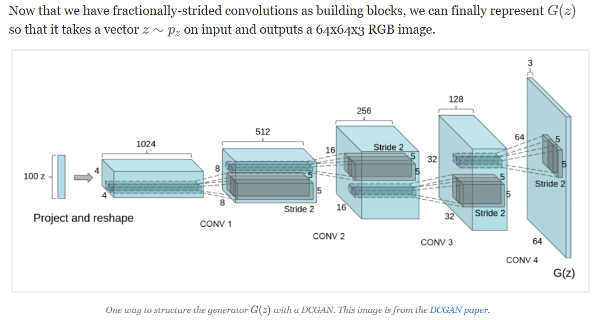

A Glance at Deep Convolution Generative Adversary Network
Posted on Tue 11 April 2017 in Glance
Deep Convolutional Generative Adversarial Networks¶
Brief Description¶
- Deep Convolutional Generative Adversarial Networks (DCGAN) is using CNN to perform GAN on Image Generation or Any continous data domain.
- Currently, people use it to generate sentence, but suffer the discrete problem while generation.
- The Key to undersatand DCGAN is to understand the Genrative Adversarial Networks.
Generative Adversarial Net (GAN)¶
Basic Element¶
1. Discriminator-Net (like Critic-Net in A3C)¶
Denote as : $D(X)$ where $X \text{ is dataset } : \text{real image + fake-image by G(Z)}$
Objective of D(X)
- Denote as $\text{D_loss}$
- $\text{max}_{D} E[ log(D(X_{\text{real image}})] + E[1-log(D(G(Z))] $
- D_score = 1 if X is from real-data, really low-value but not 0 if it is a fake-image
2. Generator-Net (like Actor-Net in A3C)¶
Denote as : G(Z) where Z = np.random.ranint(-1, 1, dim=(any-thing))
Objective of G(Z)
- G_loss = D_score
- The goal of G(Z) is to cheat on D(X), to let E[1-log(D_score(G(Z))]
import tensorflow as tf
class GeneratorNet:
def __init__(self):
self.forward=False # Faslse for training mode, due to some ops are train-only
def build():
pass
class DiscriminatorNet:
def __init__():
raise NotImplementedError()
class AdverarialTrainer:
def __init__():
raise NotImplementedError()

There are other ways to train generative models with deep learning, like Variational Autoencoders (VAEs). In this post we’ll only focus on Generative Adversarial Nets (GANs).
import numpy as np
import pandas as pd
import tensorflow as tf
# to assert the distribution dimension and boundary is enough.
z = np.random.uniform(-1, 1, 5)
print (z)
Discriminator Network Like Critics in Actor-Critc Network¶
The discriminator network D(x)takes some image x on input and returns the probability that the image x was sampled from pdata.
The discriminator should return a value closer to 1 when the image is from pdata and a value closer to 0 when the image is fake, like an image sampled from pg.
In DCGANs, D(x)is a traditional convolutional network.
$ \sum{x=y+1}$
Training Pair of D(x) :
- Real Data => target = 1
- Fake Data => target = 0
Training Stratgy¶
Now that we have defined
- G(z): z(vector) -> img[64x64x3] =>| D(x): img[64x64x3] --> 0~1(T/F)
- .................Real Data Pool =>|
and have seen how powerful the formulation is, how do we train it? We have a lot of latent variables (or parameters in approximator or network) that we need to find.This is where using adversarial networks comes in.
First let’s define some notation. Let the (unknown) probability distribution of our data be pdata.
Also we can interpret G(z)(where z∼pz) as drawing samples from a probability distribution, let’s call it the generative probability distribution, pg.
Reference¶
from IPython.display import HTML
HTML('''
''')
#### color code for gray3